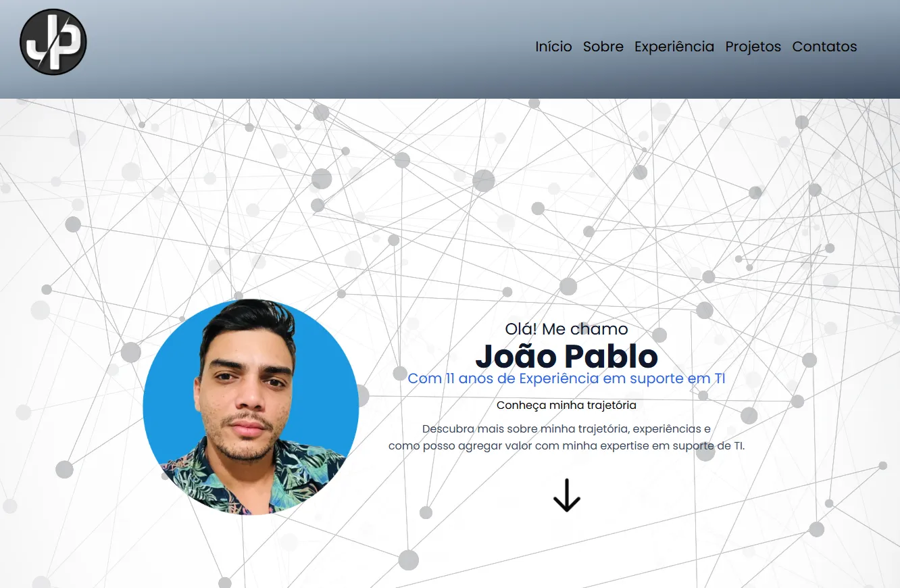
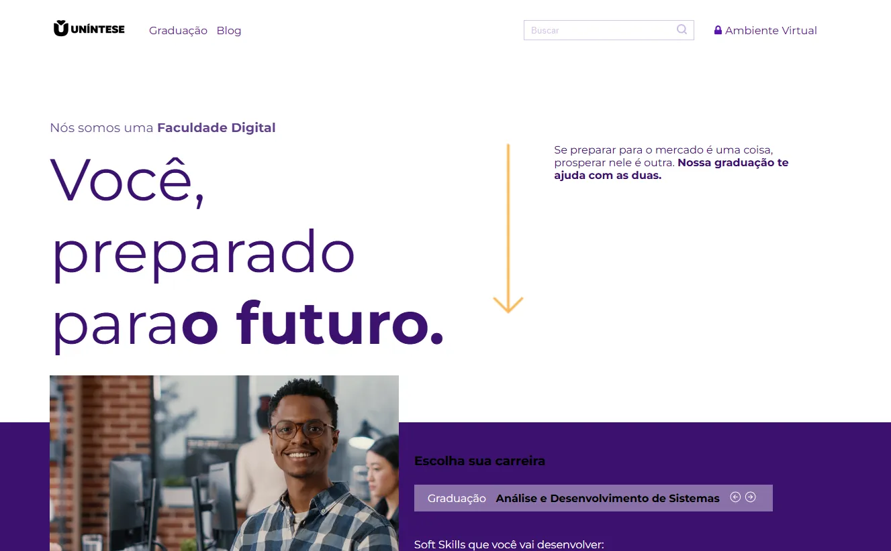

Sobre
Com 11 anos de experiência na área de Tecnologia da Informação, atuo como Analista de Suporte em TI, oferecendo soluções eficientes e garantindo a estabilidade dos sistemas informatizados. Estou sempre em busca de aprendizado e inovação, acompanhando as tendências tecnológicas para oferecer soluções eficazes e estratégicas. Atualmente, estou cursando a faculdade de Gestão em TI, ampliando meus conhecimentos para oferecer soluções ainda mais completas e alinhadas às demandas do mercado.
-

MANUTENÇÃO DE COMPUTADORES
Sou profissional de TI com atuação focada na manutenção de computadores. Com responsabilidade e comprometimento, busco garantir o desempenho, a segurança e a confiabilidade dos sistemas, contribuindo para a continuidade das atividades e a satisfação dos usuários.
-

SEGURANÇA DA INFORMAÇÃO
Atuo como profissional de TI com foco em suporte à segurança da informação empresarial. Meu trabalho é voltado para a proteção de dados, prevenção de riscos e fortalecimento da integridade dos sistemas, contribuindo para um ambiente tecnológico confiável, seguro e alinhado às boas práticas do setor
-

DEVELOPER
Sou desenvolvedor júnior com conhecimentos em HTML, CSS e JavaScript. Tenho foco na criação de interfaces web funcionais e responsivas, buscando sempre aprimorar a experiência do usuário e evoluir tecnicamente por meio de boas práticas e aprendizado contínuo.
Sistema Help Desk
implementação do sistema de gerenciamento de ativos de TI, gerenciamento de chamados (helpdesk)
A implementação do sistema GLPI traz diversos benefícios para a gestão de ativos de TI e atendimento via helpdesk. Com ele, é possível organizar e controlar todos os equipamentos e softwares da empresa, garantindo uma visão clara e atualizada do parque tecnológico. O sistema permite o registro e acompanhamento de chamados de forma eficiente, com priorização, histórico completo e automação de tarefas, o que melhora a produtividade da equipe de suporte.
Chat Interno
Implementação de solução para comunicação interna utilizando o Openfire.
A implementação da solução Openfire com o cliente Spark oferece uma plataforma segura, eficiente e personalizada para comunicação interna nas empresas. O Openfire é um servidor de mensagens instantâneas baseado no protocolo XMPP, que permite criar uma rede privada de comunicação com controle total sobre os dados. Já o Spark é o aplicativo de chat que se conecta ao Openfire, oferecendo uma interface amigável e recursos como conversas em grupo, histórico de mensagens, integração com telefonia e suporte a criptografia

Projeto Dev Portfólio
Descubra mais sobre minha trajetória, experiências em suporte em TI. Com 11 anos de experiência na área
de Tecnologia da Informação, atuo como Analista de Suporte em TI, oferecendo soluções eficientes e garantindo a estabilidade dos sistemas informatizados. Estou sempre em busca de aprendizado e inovação, acompanhando as tendências tecnológicas para oferecer soluções eficazes e estratégicas. Atualmente, estou cursando a faculdade de Gestão em TI, ampliando meus conhecimentos para oferecer soluções ainda mais completas e alinhadas às demandas do mercado.

Projeto Dev Site
Projeto site desenvolvido em Aula. Escola de "programadores"